TMA异步单元分析
TMA产生背景
GPU中，数据储存在Global Memory（一般为HBM，下称GMEM），计算单元（CUDA core/ Tensor core）位于SM中，数据需要搬运到SM内的Shared Memory（下称SMEM）中用于计算，计算后再搬回GMEM中。
SM中的线程除了负责发起计算外，还要先负责搬运数据。线程需要承担地址计算、越界处理、同步管理等一系列任务。据调查，开发者90%的时间花费在编写数据访问的代码上，10%以上的性能损耗源于内存访问开销1。
为了解决这一问题，英伟达在Hopper架构中引入了 Tensor Memory Accelerator (TMA)2，将数据访问的复杂性从软件层（线程）剥离，交由专用硬件（TMA）处理，实现数据搬运与计算解耦。
TMA是什么
TMA是一个地址计算单元，用于在GMEM与SMEM之间，或在一个线程块集群（CTA Cluster）内的多个CTA之间搬运张量数据。本文主要以GMEM->SMEM为例，SMEM到GMEM是对称的。
如专利3中所示，TMA位于SM层级，每个SM专有一个TMA。TMA把数据从GMEM搬到SM内的SMEM，后续Functional Unit，也就是CTA+Cuda core，控制数据从SMEM加载到寄存器，Cuda core进行计算。
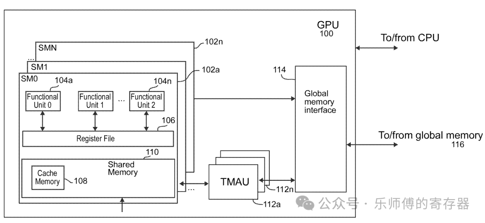
在A100中，搬运数据需要用Thread来产生访存请求，引入TMA后，数据搬运由TMA自动完成，thread可以用作其它用途。
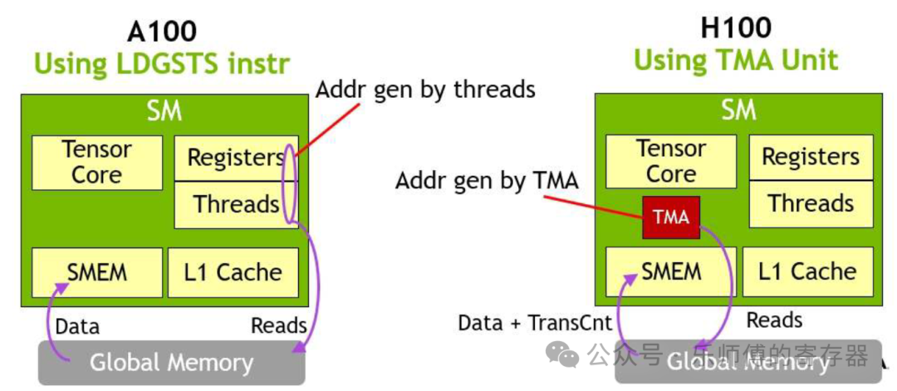
整体来说，TMA并没有改变数据通路，也没有改变搬运数据的带宽大小，只是搬运数据的控制逻辑从thread切换到了TMA上。
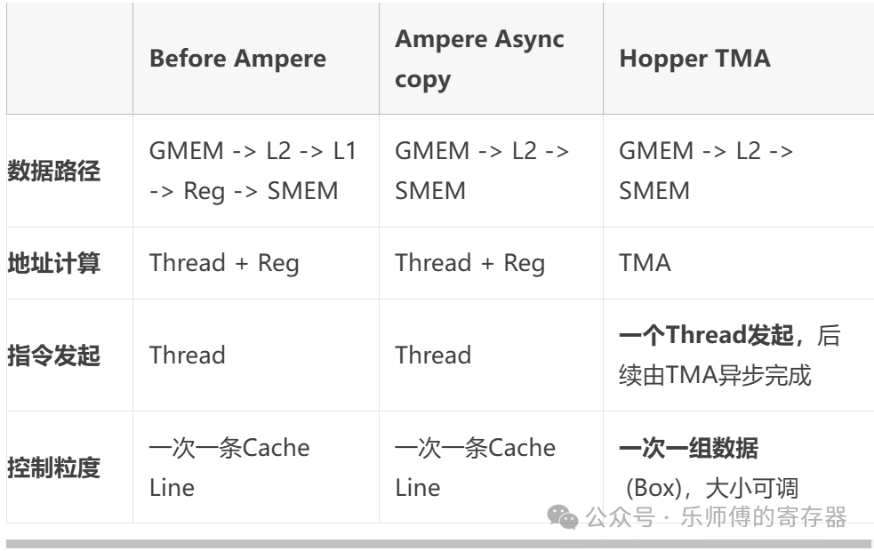
张量访问
TMA主要用于搬运张量，但也可以搬运没有被定义为张量的连续数据。
访问方法
TMA使用张量描述符（Tensor Descriptor，或Tensor Map）替代显式地址计算，开发者只需定义“搬什么”，而无需关心“怎么搬”，避免与复杂的物理地址接触。描述符是储存在GMEM中的一个数据结构，包含张量的所有属性。如果输入布局发生更改，修改GMEM中的描述符即可，无需重新修改编译整个kernel。
TMA以Bounding Box为单位搬运数据，一个thread发起一次TMA搬运操作，搬运一个Box。Box是张量中抠出的一个块，维度与张量相同。TMA支持1~5维张量。
如下图所示，蓝色立方体是原始张量，绿色立方体是一次TMA操作搬运的Box。因为访问Box地址必须16Byte对齐，但张量的边长可能是非对齐的，所以要求张量加上padding，让每个方向上tensor第一个元素都是16B对齐的，透明立方体描述的就是张量做16B对齐padding后。
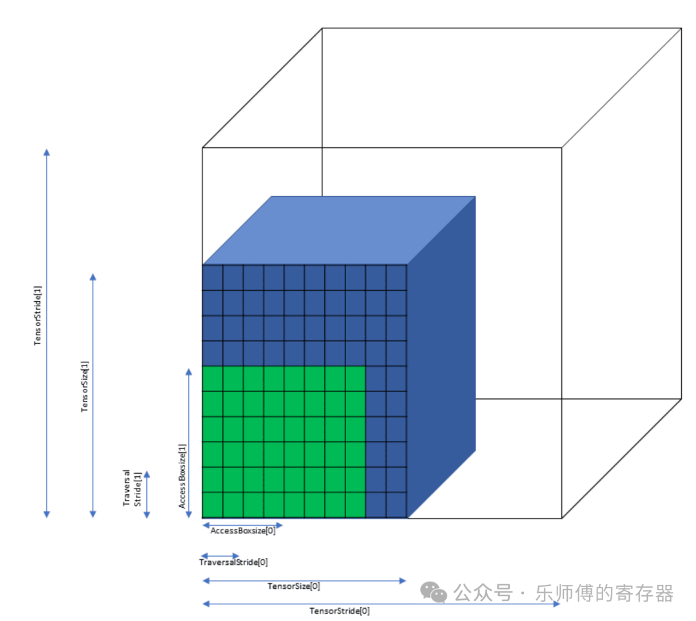
因此，在描述符中指定张量的起始地址、数据类型、搬运模式，以及蓝色、绿色、透明立方体的参数，就可以指定TMA如何访问张量。具体有以下参数：
- tensorDataType: 元素的数据类型。
- tensorRank: 张量维度数，支持1D~5D。
- globalAddress: 张量的内存起始地址，需16B对齐。
- globalDim: 一个数组，存放张量在每个维度的长度（图中的TensorSize）。
- globalStrides: 一个数组，存放张量在每个维度padding后的长度，即在每个维度上连续两行张量首地址之间的间隔（图中的TensorStride），需要16B对齐。
- boxDim: 一个数组，存放box在每个维度的长度（图中的AccessBoxSize），需要16B对齐。
- elementSritde: 一个数组，存放box在每个维度的间隔，即在每个维度上连续两个box首地址之间的间隔（图中的TraversalStride），box之间是可以重叠的。需要16B对齐。
- interleave、swizzle: 用于改变数据排列的顺序，下文介绍。
- L2Promotion: 用于L2 cache取数据优化。
- oobFill: 当访问的box超过张量的范围时，会填充为0或NaN。如下图黄色区域。
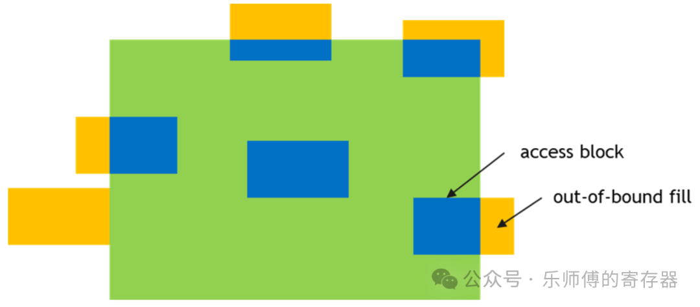
参数详见CUDA Driver: Tensor Map Object Management
一条TMA指令搬运一个box，为TMA提供描述符，以及要访问的box在张量内的坐标，给出目标地址，TMA就会开始搬运这个box。 坐标的确定方法，以二维举例：
\[ box首地址=张量首地址+coord[x]*TraversalStride[x]+coord[y]*TraversalStride[y] \]
GMEM->SMEM时，坐标可以为负数，但SMEM->GMEM时，坐标必须为正。
搬运模式
张量搬运的详细模式详见CUDA: Tensor Access Modes
TMA支持两种张量搬运模式，Tile mode和im2col mode。
Tile Mode
在Tile Mode下，box搬运进SMEM后保持与GMEM中相同的排布。
对于2D矩阵，TMA还支持两种特殊的模式：
- tile.scatter4 mode，将张量中连续的四行，搬运后变为分散的四行。
- tile.gather4 mode，张量中分散的四行，搬运后变为连续的四行。
下图举例为gather4 mode，提供起始坐标(1, 2), (1, 5), (1, 0) ,(1, 9)，以及搬运长度4，TMA将按坐标顺序，把这四行搬运进SMEM中，并拼到连续四行。
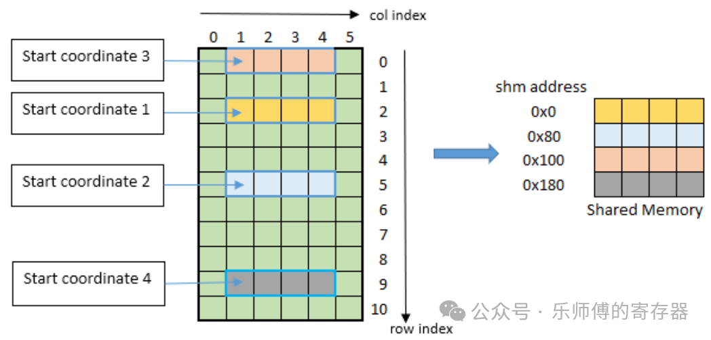
im2col Mode
张量将被视为一组图像做im2col的转换后放入SMEM，用于卷积运算。此时不用boxSize参数，改为Bounding-Box Lower-Corner，Bounding-Box Upper-Corner，Pixels-per-Column，Channels-per-Pixel参数确定im2col的访问顺序。支持3D、4D、5D4。
Interleave layout
Interleave layout支持3D、4D、5D，有三种模式：
- No interleave (NDHWC)
- 8 byte interleave (NC/8DHWC8) : C8 utilizes 16 bytes in memory assuming 2B per channel.
- 16 byte interleave (NC/16HWC16) : C16 utilizes 32 bytes in memory assuming 4B per channel.
以8 byte interleave举例：NDHWC格式的张量，本来是以N，D，H，W、C从外到内的顺序遍历存储。此模式下，在最内层Channel维度被切片成C/8个长度为8的组，连续的8个channel(C8)被存储在一起。外层按N，C/8，D，H，W的顺序循环遍历。当C不能被8整除时，最后一组C会被0填充。 这种Interleave layout应该是专为Tensor core设计，每个切片正好匹配一个Tensot Core的大小，做一次矩阵乘法。 TMA不做layout的转换，只是以这种顺序访问GMEM，要求GMEM中存放的切片后的格式。
swizzling mode
SMEM由32个bank组成，在一次访问中，可以同时读/写多个bank，但一个bank只允许读一个和写一个元素，如果同时读/写的两个元素在同一个bank中，则称为bank conflict，只能等一个访问结束后才允许另一个访问。如下图，一列为一个bank，一共32个bank。
例如，如果做矩阵乘法，是用矩阵A的行乘以矩阵B的列，假设有B是一个16*32的矩阵，以行优先搬入SMEM中。搬入时（如下图绿色框），是分别写入32个bank，没有发生bank conflict，可以同时写入。但做乘法以列读出时（高亮色0和1），一列数据在同一个bank中，无法同时读出，只能按顺序一个一个读出花费很多时间。
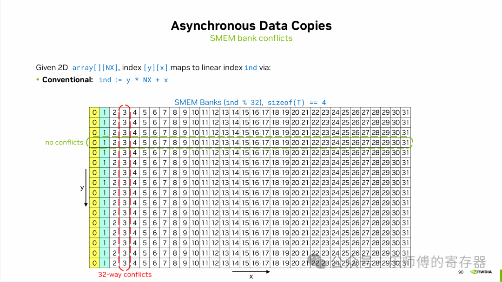
Swizzling操作就是为了避免这种情况，如下图，搬运进SMEM时（横向绿色框），以交错的顺序写入32个bank中，没有bank conflict。读出时，因为做了交错，原本一列中的数据被分散到了不同的bank（高亮色0和1），因此可以一次读出B矩阵的一列，节约了访存时间。
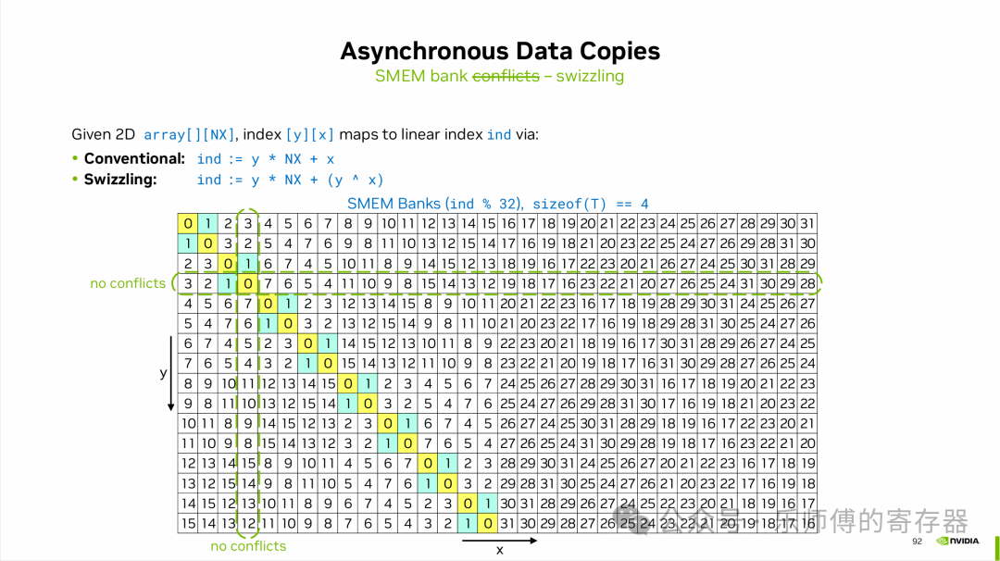
TMA支持以下几种Swizzling Mode，简单来说就是不同的交错方法5。
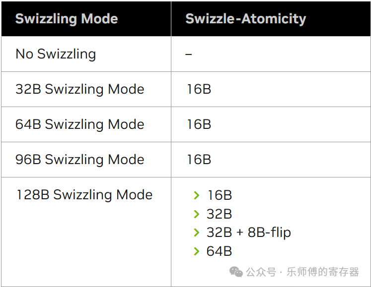
支持multicast
在数据并行训练中，所有SM可能需要访问相同的权重进行计算。multicast支持一个SM发起的TMA访问，数据广播到多个SM的SMEM上。编程时通过CTA ID mask定位需要数据的SM。
支持规约
TMA支持规约操作（Reduction）：AND, ADD, XOR, MIN, MAX, DEC, OR, INC等。就是把搬运的数据，和目的地的数据做运算，结果存放进目的地。
TMA的同步机制
因为TMA是异步于SM的，因此当数据准备完成后，需要通知SM。英伟达把数据同步抽象为生产者（producer）和消费者（consumer）。
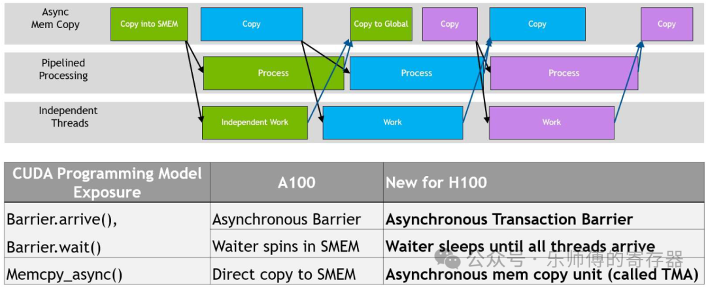
当生产者完成数据准备后，会发出arrive()的标识。消费者会提前发出wait()，等待消费者的arrive()。消费者在等待生产者的arrive时，可以先运行不依赖这些数据的其它任务，这就带来了更高的并发性。如上图中，Process依赖Copy into SMEM的数据，Copy to Global依赖Process的数据，对同一块数据，后一个操作必须等待前面的操作完成。但对于不同的数据，如搬运蓝色数据和计算绿色数据就可以同时运行，节约等待时间。
以上同步机制在A100中也有用到，不过A100中是thread发起的异步搬运，而H100中变为TMA。
在H100中，还提供了新机制：transaction barrier。在多次搬运的场景下，TMA每搬运一个box， transaction counter会+1，当counter达到预设的值后，消费者自动释放wait，无需为每次TMA搬运做同步。counter的来源可以是多个不同的copy操作。
TMA架构
拓扑位置
在GPU中TMA的位置如下图。
在一个GPC中有多个SM，一个SM对应一个TMA，TMA接到到MMU上，MMU做虚拟地址到物理地址的转换、内存保护、访问仲裁等。
多个GPC中MMU接到XBar总线上，访问Memory Partition Unit，这个单元用来访问不同的片外HBM。
，把几个SM组成一组共同管理。指的是产品中的TPC，H100和B200中，一个TPC管理两个SM。在GPC中，Pipeline Manager把任务分给不同的DPC，在DPC内部，MPC负责把任务切分给SM或Primitive Engine（几何计算）。 图中的DPC 1120(Data Processing Clusters)，把几个SM组成一组共同管理。指的是产品中的TPC，H100和B200中，一个TPC管理两个SM。在GPC中，Pipeline Manager把任务分给不同的DPC，在DPC内部，MPC负责把任务切分给SM或Primitive Engine（几何计算）。")
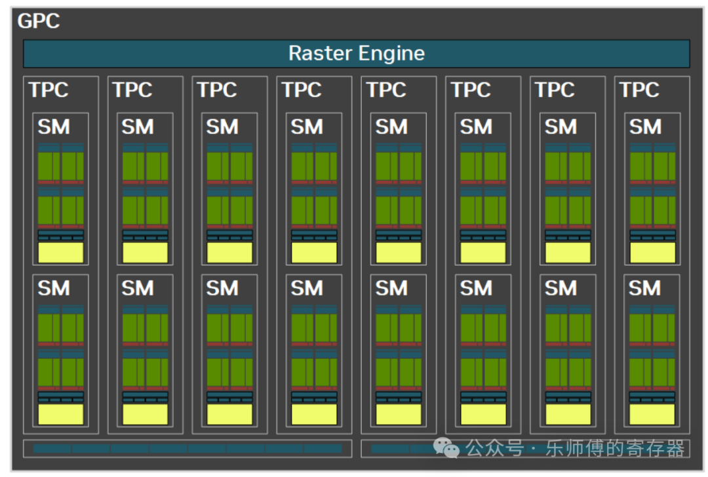
工作流程
TMA一个典型的工作流程如下：
SM发送单次请求（204），提供2.1节的信息和指令启动TMA，此后TMA开始异步执行。
地址计算由TMA完成，如果数据量过大，TMA分解为多个子请求，符合L2单次访问的大小，逐个发送到L2（206）。
数据返回TMA（208），TMA把数据写入SMEM (212)。
每个子块写入SMEM后，计数器递增，SM监控计数器（214），到达预期值后SM就知道数据已就绪。
相比之前的LDGSTS方法，SM上的每个线程不需要自己计算每个子块的地址，只需一个线程发出单次的请求，由TMA负责后续操作。地址计算由TMA完成，SM不再需要主动管理每个子块的同步，仅需监控计数器最终状态。在发出请求后SM可异步的执行其他任务。
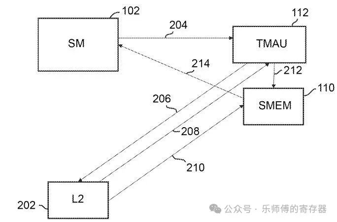
TMA内部流水线
- MIOC(Memory I/O Controller, 604)接收SM的请求。
- 请求放入Request Queue（606）中，可以根据请求类型调整优先级。
- 对于张量请求，需要一个指向GMEM中描述符的地址，从GMEM读取描述符。
- 为了避免多次访问GMEM中相同的描述符，TMA中放置了Descriptor Cache暂存描述符。
- Setup Block(610)合并Tensor 和 请求指令的信息，进行错误检查。
- Request Generator遍历box中每个元素，计算其在GMEM中的物理地址，和在SMEM中的地址，发出L2 request。swizzle地址计算也在此生成。
- request通过GNIC（general network interface controller，614）发送到L2。
- Req Completion Tracking block(618)负责跟踪数据请求是否完成。
- 非张量的连续数据访问可跳过Descriptor Cache和Setup部分。
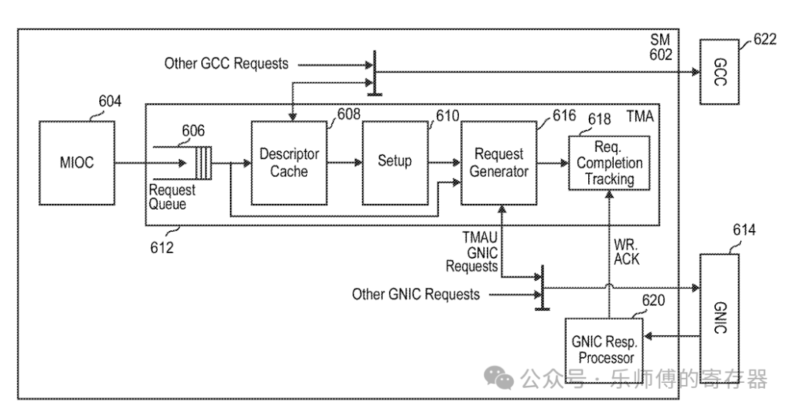
TMA编程方式
CUTLASS C++
📌cutlass TMA 编程可参考：tutorial-hopper-tma
构建于CuTe库之上的CUTLASS 3.0，为TMA编程提供了一套C++模板抽象API 。TMA编程可以分为以下环节：
- 主机端配置：使用make_tma_copy函数，创建一个包含了2.1节介绍的Tma描述符。
- 传递至GPU：描述符会被加载到GMEM/constant内存中 。
- 设备端执行：单线程（例如threadIdx.x == 0）发起TMA的async copy命令。
cutlass为TMA提供如下接口：
TMA_LOAD系列，从GMEM加载数据到SMEM：
struct SM90_TMA_LOAD_1D / 2D / 3D / 4D / 5D { struct void copy(void const* desc_ptr, uint64_t* mbar_ptr, void* smem_ptr, int32_t const& crd...); };TMA_LOAD_IM2COL系列，卷积专用的im2col模式
struct SM90_TMA_LOAD_IM2COL_3D / 4D / 5D { static void copy(void const* desc_ptr, uint64_t* mbar_ptr, void* smem_ptr, int32_t const& coord_c, int32_t const& coord_w, int32_t const& coord_n, uint16_t const& offset_w); };TMA_LOAD_MULTICAST系列，集群内多SM同时接收同一数据：
struct SM90_TMA_LOAD_MULTICAST_1D / 2D / 3D / 4D / 5D { static void copy(void const* desc_ptr, uint64_t* mbar_ptr, uint16_t multicast_mask, void* smem_ptr, int32_t const& crd...); };TMA_STORE系列，从SMEM store到GMEM：
struct SM90_TMA_STORE_1D / 2D / 3D / 4D / 5D { static void copy(void const* desc_ptr, void const* smem_ptr, int32_t const& crd...); };TMA_REDUCE_ADD系列，与目标地址做规约add后存入：
struct SM90_TMA_REDUCE_ADD_1D / 2D / 3D / 4D / 5D { static void copy(void const* desc_ptr, void const* smem_ptr, int32_t const& crd...); };
CUTLASS使用函数重载提供统一的接口, 根据tensor的维度确定调用哪条指令执行TMA，简化用户编程。
每种LOAD操作都提供对应的PREFETCH版本，更多详细代码见：copy_sm90_tma.hpp
PTX
PTX是英伟达开放给用户的虚拟汇编语言，可以理解为是Cuda代码转换为真正的GPU硬件指令的中间层。CUTLASS中对TMA的操作其实就是调用相应的PTX指令。
与TMA相关的PTX指令有以下几类：
Bulk Copy / Reduce / Prefetch（非张量的搬运）
cp.async.bulkcp.reduce.async.bulkcp.async.bulk.prefetchTensor Copy / Reduce / Prefetch（多维张量搬运）
cp.async.bulk.tensorcp.reduce.async.bulk.tensorcp.async.bulk.prefetch.tensor同步管理指令
cp.async.bulk.commit_groupcp.async.bulk.wait_group修改已存在的Tensor map (描述符)字段
tensormap.replace
关于PTX指令的具体介绍见：CUDA: asynchronous-copy
应用
DeepSeek开源的DeepGEMM是一个高效的矩阵乘法库，利用TMA加载 LHS矩阵、缩放因子、RHS矩阵等。也使用了多播在多CTA间共享权重，减少冗余加载6。
Flash Attention 3是一种基于Hopper GPU高度优化的Transformer架构，其中也利用TMA异步的把QKV矩阵加载到SMEM，并利用swizzle高效的完成数据转置用于tensor core7。
GTC 2024上的Topic：Advanced Performance Optimization in CUDA
Footnotes
NVIDIA: Techniques for efficiently transferring data to a processor https://patentimages.storage.googleapis.com/2e/65/c9/73308c2c12e3d5/US11080051.pdf↩︎
Hopper Architecture Whitepaper https://resources.nvidia.com/en-us-hopper-architecture/↩︎
NVIDIA: Method and Apparatus for Efficient Access to Multidimensional Data Structures and/or Other Large Data Blocks https://patentimages.storage.googleapis.com/23/89/13/0914c8f599bd9e/US20230289304A1.pdf↩︎
im2col mode detail https://docs.nvidia.com/cuda/parallel-thread-execution/index.html#tensor-im2col-mode↩︎
Swizzling Modes Detail https://docs.nvidia.com/cuda/parallel-thread-execution/index.html#tensor-swizzling-modes↩︎
deepseek: DeepGEMM https://github.com/deepseek-ai/DeepGEMM↩︎
Flash Attention 3 Paper https://arxiv.org/html/2407.08608v1↩︎